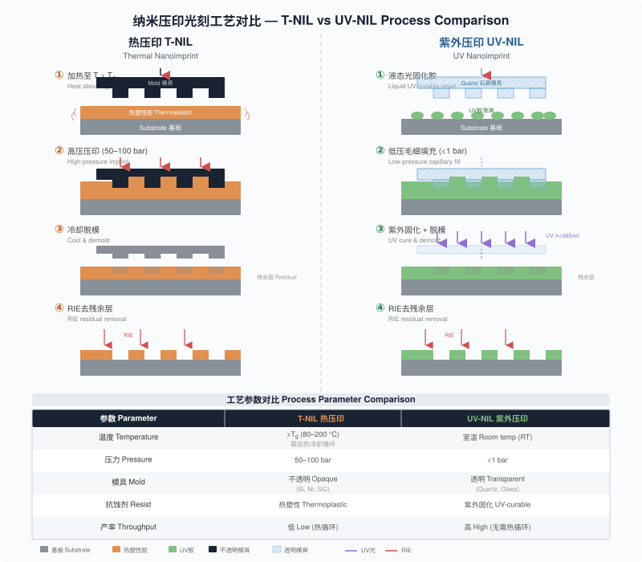

1995年，Stephen Y. Chou首次报道在PMMA聚合物中用压印模具制造亚25 nm孔洞，"纳米压印"（Nanoimprint）一词由此诞生。纳米压印光刻（Nanoimprint Lithography, NIL）不依赖光子或带电粒子曝光抗蚀剂，而是通过模具与聚合物的直接机械接触来复制图形。这种方法完全避开了光学衍射的限制，分辨率可与电子束光刻比肩，同时又具有与掩模光学光刻类似的并行处理特性。NIL在早期开发中即实现了亚10 nm分辨率。
NIL一度作为下一代光刻（Next Generation Lithography, NGL）候选技术被列入国际半导体技术路线图（ITRS, 2003），但未能进入主流IC制造。主要原因有二：压印过程中模具压入抗蚀剂可能导致图形畸变和多层对准偏差；光学光刻拥有成熟的技术基础设施和供应链，而NIL的产业化仅由极少数公司推动。Canon Nanotechnologies在2018年开发出FPA-1200NZ2C集群NIL系统，可在300 mm晶圆上实现90片/小时吞吐量、亚20 nm分辨率和3.4 nm套刻精度，计划于2025年开始用NIL量产3D NAND闪存。
NIL真正大规模应用的领域是光子学（Photonics）。光子器件通常只需单层或少数层高分辨率周期性纳米结构，正好发挥NIL在成本效益和可扩展性方面的优势。光子学驱动的全球市场预计到2025年将接近2万亿美元。
热纳米压印光刻（Thermal NIL, T-NIL）是最早提出的纳米级复制工艺。基本流程包括四步：
graph LR
A["加热聚合物至Tg以上50-100°C"] --> B["压印: 50-100 bar压力"]
B --> C["冷却至Tg以下后脱模"]
C --> D["RIE去除残余层"]薄层聚合物（100~200 nm厚）涂覆在平整基底上，加热至玻璃化转变温度（Glass Transition Temperature, Tg）以上使其软化，模具在50~100 bar压力下压入聚合物。压印深度略小于聚合物层厚度，避免模具表面与基底硬接触。冷却至Tg以下约10 °C后释放压力，50 °C时分离模具与样品。最后用反应离子刻蚀（Reactive Ion Etching, RIE）去除压印区域的残余聚合物层，暴露基底表面。
模具是复制工艺的核心。T-NIL模具需要用硬质材料制造，能承受加热和压力而不发生明显磨损。常用材料包括硅、二氧化硅、氮化硅和各种金属。对于亚100 nm特征，模具图形通常由电子束光刻制造后通过RIE转移到基底材料中。
最耐用的模具材料是镍。镍模具的制造流程如下：在标准硅片上进行电子束光刻制造PMMA图形；显影后蒸镀10~20 nm金或镍种子层；电镀镍填充PMMA图形空腔并继续电镀至100~200 μm总厚度；最后从硅片上剥离镍片。镍片可固定在金属支撑板上作为模具使用，也可弯曲包裹在圆柱上制成辊对辊（Roll-to-Roll, R2R）压印用的辊筒模具。
HSQ抗蚀剂在电子束曝光或高温烘烤后转变为二氧化硅，硬度足以直接用作模具，无需图形转移步骤。在30 nm厚HSQ中，60 nm周期的20 nm线条已被用作压印模具。
聚合物是实现模具分辨率的关键介质。对T-NIL聚合物的基本要求包括：低Tg以降低压印温度；低粘度以促进聚合物流动填充模具空腔；低收缩率以保持图形保真度；高RIE耐受性以确保可靠的图形转移。
聚合物粘度对压印过程影响巨大。PMMA的粘度随分子量和温度剧烈变化：350 kg/mol PMMA的粘度比25 kg/mol PMMA高三个数量级以上。实际操作中，高温有利于降低粘度加速填充，但也延长了冷却时间。200 °C下几秒即可完成的压印，在140 °C下可能需要数小时。
小尺寸特征比大尺寸特征更容易压印，因为聚合物的挤压流动距离更短。最困难的情况是同一模具上同时存在大尺寸和小尺寸图形：小特征快速填充时，大特征空腔可能未完全填满，留下空洞缺陷。这种现象类似电子束光刻中的邻近效应，可称为"压印邻近效应"（Imprinting Proximity Effect）。均匀分布模具上的凸起和凹陷有助于缓解这一问题。
PMMA和聚苯乙烯（Polystyrene, PS）是最常用的T-NIL聚合物。商用专用聚合物如NXR-1000系列和mr-I 7000R系列经过优化，具有高分辨率、晶圆级均匀性、低温低压加工特性和优异的RIE耐受性。
脱模（Demolding）是T-NIL成败的关键环节。聚合物粘附模具表面、模具侧壁摩擦力过大或侧壁存在负坡度，都会导致脱模时图形畸变或损伤。
三种模具侧壁形貌的脱模难度依次递增：
| 侧壁形貌 | 脱模难度 | 说明 |
|---|---|---|
| 锥形（正坡度） | 低 | 模具容易拔出 |
| 垂直 | 中 | 取决于侧壁粗糙度和深宽比 |
| 倒锥形（负坡度） | 高 | 聚合物被"锁定"在模具中 |
表6.1 模具侧壁形貌与脱模难度。数据来源：Cui 2025, §6.2.3
降低表面粘附的主要方法是涂覆防粘层（Anti-Sticking Layer）。含氟碳化合物或氟硅烷可以使模具表面变为疏水低表面能状态。对于高深宽比压印，单层聚合物可能无法安全脱模（深宽比通常不超过3:1），双层聚合物方案可解决这一问题：底层使用高分子量PMMA（高剪切模量），顶层使用低分子量PMMA（低粘度易填充）。高分子量聚合物位于图形基底区域，可承受脱模时的高剪切力。
紫外纳米压印光刻（UV-NIL）使用透明模具和紫外固化聚合物，在室温和低压（<1 bar）下操作。UV固化聚合物在室温下为液态，粘度范围50~200 mPa·s，通过毛细力填充模具空腔，紫外光通过透明模具照射使聚合物光聚合固化。UV-NIL最早于1996年提出。
透明模具的首选材料是石英（熔融石英），但直接在石英上进行电子束光刻存在充电问题，需要先镀10~20 nm铬层作为导电层和刻蚀掩模。石英模具价格昂贵，替代方案是从硅母版大量复制聚合物模具，如同复制光盘。聚合物模具成本极低，可一次性使用后丢弃，延长母版寿命。商用聚合物模具材料包括Obducat的IPS（可用于热和紫外压印）和Micro Resist Technology的OrmoStamp（仅限UV-NIL）。含氟聚合物模具表面天然疏水，无需涂覆防粘层，有些已重复使用200次以上。
聚合物模具的一个独特优势是"自清洁"效应：母版表面的颗粒缺陷在复制过程中嵌入聚合物模具中移走，不会影响后续压印。
UV-NIL聚合物的关键组分包括树脂单体、光引发剂和添加剂。理想的UV-NIL聚合物应具备低粘度（优选<15 mPa·s，实际常为数十至数百mPa·s）、高分辨率（分子链仅1~2 nm，分辨率主要受模具限制）、快速固化（数百mJ/cm²量级的固化能量，数秒至一分钟固化时间）、低收缩率和高干法刻蚀选择比。
UV固化聚合物的一个关键问题是收缩。典型体积收缩为5~15%，通过选择高分子量组分可降至3~6%。但在实际纳米图形中，收缩表现与均匀薄膜测量值不同：100 nm线条在UV固化后几乎无尺寸变化，可能因为小特征在固化时承受更高的局部压力。
丙烯酸酯系UV固化聚合物灵敏度高但对氧气敏感，氧分子会猝灭自由基抑制聚合过程。真空中最低曝光剂量700 mJ/cm²，在空气中增至1.4 J/cm²。阳离子聚合的环脂族环氧树脂系统克服了氧抑制问题，同时因高硅含量具有优异的干法刻蚀耐受性和极低收缩率。商用UV-NIL聚合物包括Nanonex的NXR-2000系列和Micro Resist Technology的mr-NIL200系列。
喷墨闪光压印光刻（Jet and Flash Imprint Lithography, J-FIL）起源于1999年提出的步进闪光压印光刻（Step and Flash Imprint Lithography, SFIL）。J-FIL的核心创新是使用按需喷墨分配器（Drop-on-Demand Inkjet Dispenser）以皮升级精度分配抗蚀剂液滴，液滴的空间分布经过计算以匹配模具图形的体积分布。这确保所有空腔在压印后完全填满，同时残余层极薄（通常<15 nm）且均匀。
J-FIL是与光学光刻最接近的NIL技术：并行处理，步进重复模式工作，模具尺寸26 mm × 33 mm与标准193 nm DUV光刻的曝光场一致，透明模具允许高精度对准。其相对于光学光刻的优势包括：
Canon Nanotechnologies的最新J-FIL系统（FPA-1200NZ2C）在四腔集群构型中运行，300 mm晶圆吞吐量达90片/小时，套刻精度优于5 nm。
基底保形压印光刻（Substrate Conformal Imprint Lithography, SCIL）使用PDMS（聚二甲基硅氧烷, Polydimethylsiloxane）软模具，可覆盖150 mm全晶圆面积。SCIL模具由液态硅橡胶浇注在玻璃模板上制成，气动压力从一端依次推下软模具（仅20 mbar），避免气泡困陷。模具空腔通过毛细力填充液态抗蚀剂，UV固化后依次真空吸起模具完成脱模。
单层PDMS模具（弹性模量~1.8 MPa）在压印亚100 nm密排结构时会发生图形塌陷或下陷。三层复合模具解决了这一问题：
| 层 | 材料 | 厚度 | 模量 | 功能 |
|---|---|---|---|---|
| 顶层 | 硬PDMS | <100 μm | 80 MPa | 承载纳米图形，防止塌陷 |
| 中间层 | 软PDMS | 0.5 mm | 15 MPa | 提供保形性 |
| 底层 | 薄玻璃 | 200 μm | - | 刚性支撑，可弯曲 |
表6.2 SCIL三层复合模具结构。数据来源：Cui 2025, §6.4.4
三层复合模具已实现60 nm周期上25~30 nm线宽和50 nm周期上20~30 nm直径孔洞的150 mm晶圆全面积压印。SCIL由Philips Research和SUSS MicroTec联合开发，现作为SUSS掩模对准器（MA/BA6和MA/BA8）的工具套件商业化，亚50 nm分辨率的全场压印仅需约2分钟。

软光刻（Soft Lithography）使用弹性体模具将墨水图形转移到基底上。1993年，Kumar和Whitesides报道用PDMS模具将烷基硫醇墨水转移到金薄膜上，硫醇图形随后作为金的刻蚀掩模。PDMS具有适合软光刻的独特性质：
PDMS的标准制备方法是将Sylgard 184与固化剂以10:1比例混合，真空脱气后浇注在图案化母版上，室温24小时或65 °C 4小时或100 °C 1小时固化。
PDMS的低拉伸模量（~1.8 MPa）在亚微米尺度成为问题：高深宽比结构塌陷，大跨度结构下陷。商用Sylgard 184仅适用于500 nm以上的图形结构。改性PDMS（模量9.7 MPa）可将分辨率推进到80 nm。无支撑PDMS模具在5 × 5 cm²面积上可出现高达20 μm的图形位移偏差，使用刚性背板的复合模具可消除这种长程畸变。
微接触印刷（Microcontact Printing, μCP）是软光刻的核心技术。PDMS模具先吸收硫醇溶液（墨水），再与镀金基底接触，硫醇分子在金表面快速自组装形成单分子层掩模。硫醇SAM对氰化物金刻蚀液的耐受性比裸金高10⁶倍，是优异的刻蚀掩模。
墨水涂覆方法分三种：(1) 滴墨法：将硫醇溶液滴在模具上30秒后吹干；(2) 浸泡法：将模具浸入溶液数分钟后吹干；(3) 接触墨垫法：模具与浸有硫醇的平面PDMS墨垫直接接触，仅凸起表面获取墨水。前两种方法中模具侧壁和空腔底部也沾有墨水，压印时会导致墨水扩散和蒸发，限制分辨率。接触墨垫法可实现100 nm金线特征，但每次墨垫接触只能印一次。
硫醇SAM体系的局限在于仅适用于贵金属（Au、Ag、Cu、Pd），其中金薄膜最常用。但可利用图案化的金膜作为掩模进一步转移到其他材料，例如用金掩模将μCP图形转移到PMMA抗蚀剂层。使用固定化酶墨水可将分辨率提高到催化剂运动范围限制的~2 nm。
NIL的复制特性决定了该技术仅在大量同一图形的制造需求中才具有成本优势。光子学领域提供了这样的规模化应用场景：大面积周期性表面浮雕图形（抗反射、导光、光提取、全息成像等），通常需要制造在柔性薄膜上。
卷对卷（Roll-to-Roll, R2R）连续压印有三种基本构型：
graph TD
A[R2R压印构型] --> B[平板卷对卷]
A --> C[辊对平板]
A --> D[辊对辊连续]
B --> B1["平板模具步进压印柔性薄膜"]
C --> C1["柔性模具+刚性辊压在刚性基底上"]
D --> D1["辊筒模具连续滚压柔性薄膜基底"]真正的连续R2R压印使用辊筒模具（Roller Mold）在柔性薄膜基底上持续滚压。对于UV固化R2R压印，系统包括薄膜基底的连续送料/收料装置、UV固化液态聚合物涂覆装置、压印辊筒模具和背面UV光源四个基本组成部分。
R2R压印面临三大挑战：
辊筒模具制造：在辊筒表面直接制造高分辨率图形困难。常见做法是先在柔性平面基底上制造图形（如镍片），再包裹在辊筒上，但这种方法不可避免地在接缝处留下间隙。无缝辊筒模具可通过近接光刻、激光直写、电子束光刻（在旋转辊筒上连续曝光）或阳极氧化铝（AAO）自组装制造，其中电子束曝光已实现120 nm线条特征。
大面积均匀涂覆：传统旋涂仅适用于圆形刚性基底。大面积连续涂覆使用棒涂、浸涂、刮刀涂覆、气刀涂覆、狭缝模涂覆、凹版涂覆等成熟工业工艺。狭缝模涂覆和微凹版涂覆已可实现最低20 nm的涂覆厚度。
动态对准与套刻：多层图形的R2R连续压印需要动态对准，通过摄像头捕捉滚动基底上的对准标记并反馈到卷绕系统和辊筒位置控制。目前R2R连续压印的最佳动态套刻精度约10 μm，严重限制了整体图形化精度。
NIL未能进入主流IC制造的一个核心问题是缺陷密度过高。除尘埃颗粒引起的缺陷外，抗蚀剂在模具中的不完全填充是UV-NIL特有的缺陷来源。J-FIL通过智能喷墨分配按图形体积分布精确投放抗蚀剂，实现残余层厚度<15 nm且均匀，有效降低了填充缺陷。压印模具弓形下压策略（中心先接触，向外扩展）排出了模具空腔中的空气。
套刻精度（Overlay Accuracy）是多层图形制造的关键指标。T-NIL因使用不透明模具，对准精度通常仅达亚微米级。UV-NIL使用透明模具，可实现更高精度的莫尔条纹（Moiré Fringe）干涉对准。当模具侧光栅周期P₂和基底侧光栅周期P₁轻微不同时，莫尔条纹周期为P_M = P₂/(1 - P₂/P₁)。例如P₁ = 2 μm、P₂ = 1.96 μm时莫尔周期为98 μm。150 nm的对准偏差在莫尔图形中放大为7.5 μm的移动，用普通光学显微镜即可观测。莫尔条纹方法的放大倍数可达~3000倍。SCIL已实现30 × 30 mm²面积上亚10 nm的对准精度，J-FIL在300 mm晶圆上实现亚5 nm套刻精度。
T-NIL的对准精度受两个基本因素制约：(1) 压印压力引起的机械形变，平台不平行或基底翘曲导致对准位置偏移；(2) 模具与基底材料不同的热膨胀系数在加热后导致位置偏差。例如氧化物模具在4英寸硅片边缘可产生100 nm/°C的热膨胀差异。
通过模具与聚合物的直接机械接触复制图形，完全避开光学衍射限制，分辨率可达亚10 nm。
热压印需加热加压（50~100 bar），使用不透明模具；紫外压印在室温低压（<1 bar）下操作，使用透明模具和光固化胶。
镍模具最耐用，石英模具用于UV-NIL。防粘层（含氟化合物）可降低脱模难度，侧壁形貌对脱模影响显著。
光子学是NIL最成功的应用领域。J-FIL系统已实现300 mm晶圆、90片/小时吞吐量、亚5 nm套刻精度。